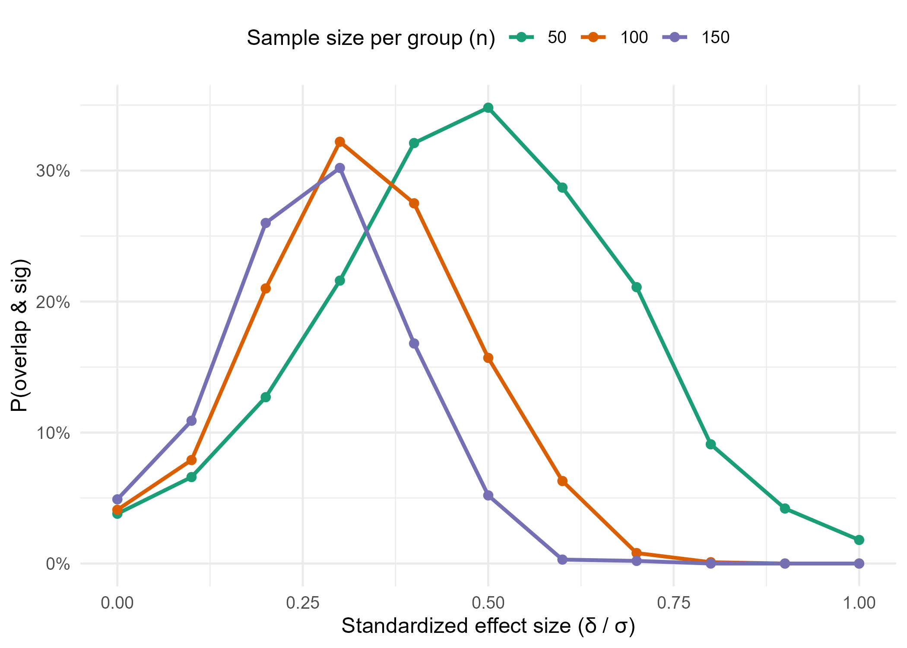

At a recent talk, I presented RCT results using the graph below, showing weighted and unweighted group means with 95% confidence intervals (CIs) for control and treatment. An audience raised an interesting question, “If the error bars overlap, how can the treatment be significant?”

It can indeed feel paradoxical at the moment because the picture invites a common heuristic: non-overlapping 95% CIs ⇒ statistically significant. Many people then assume the converse where overlapping 95% CIs ⇒ not significant. But does the converse really hold? When we see overlap, does it naturally rule out a real treatment effect?
Why overlap \(\neq\) no effect
To probe this intuition, I first simulated two-arm experiments under a modest true effect. For each trial, I drew treatment and control samples, computed 95% CIs for each group mean, and then tested the difference in means. I then tracked two outcomes: (1) cases where the group CIs overlapped and the treatment effect was significant, and (2) cases where, given overlap, the effect was still significant—a direct check on the “overlap ⇒ not significant” intuition.
In 5,000 simulated trials (n=40 per arm, true effect \(\delta\) = 0.1), I found that the two 95% CIs overlapped and the effect was significant in 22% of runs; among the overlapped cases, 25% still yielded a significant effect. Overlap, in other words, does not guarantee “no effect”.
Analytically, this actually makes sense. Per-group CIs capture the uncertainty around each mean, but the hypothesis test targets the uncertainty of their difference. For two independent groups with equal standard errors (SE), the standard error of the difference is
\[
SE_\Delta = \sqrt{SE^2_T + SE^2_C} = \sqrt{2} SE
\]
For a two-sided test at 5% significance level, we reject the null hypothesis when the estimated difference satisfies
\[
|\hat \Delta| > 1.96 \times \sqrt{2} SE \approx 2.77 SE
\]
whereas non-overlapping 95% CIs would require
\[
|\hat \Delta| > 2 \times 1.96SE = 3.92 SE > 2.77 SE
\]
So there still exists a band in between—large enough to reject the null, but not large enough to prevent interval overlap. That’s the window where both statements are true: the group CIs overlap, yet the treatment effect is significant.
When it can happen
This naturally raises the next question: under what conditions are we more—or less—likely to observe overlapping 95% CIs still mean a real effect? We can first think about this analytically.
Let the 95% CI half-widths for the two group means be
Standardizing by \(SE_\Delta\), this is equivalent to
\[
1.96 < Z < \frac{1.96}{r}, \space r = \frac{SE_\Delta}{SE_T + SE_C}
\]
Here, \(Z = \frac{d}{SE_\Delta}\) is the standardized effect estimate, which (under large n) follows approximately standard normal with mean
\[
\theta = \frac{\delta}{SE_\Delta}
\]
where \(\delta\) is the true difference is group means.
So the paradox window [1.96, 1.96/r] depends on
Geometry parameter \(r = SE_\Delta / (SE_T + SE_C)\), which reflects study design (e.g. balance, variance structure, etc.
Signal parameter \(\theta\) = \(\delta / SE_\Delta\), which reflects effect size relative to precision
Every scenario I explore below can be understood as changing one of these parameters. These shifts determine how often the “significant while overlapping” phenomenon shows up in practice.
(a) Sample size and effect size (signal parameter\(\theta\))
Let’s start with sample size and effect size. For two groups of sizes \(n_T\) and \(n_C\) with common variance \(\sigma^2\),
If \(\theta\) is too small, most samples fall below 1.96, and we won’t observe statistical significance.
If \(\theta\) is too large, most samples exceed the overlap cutoff 1.96/r, and the CIs won’t overlap.
Only at intermediate \(\theta\) (i.e. modest effect size and moderate n) do we often land in the narrow window [1.96, 1.96/r].
To illustrate, I simulated two groups under different combinations of per-group sample size n and standardized effect size (\(\frac{\delta}{\sigma}\)). For each setting, I recorded whether the group CIs overlapped and the two-sample test was still significant.
The results show that, for any given sample size, the probability of seeing this paradox peaks at moderate effect sizes. Also, with larger sample sizes, smaller effects become enough to land in the paradox window.

Code
set.seed(123)n_grid<-c(50, 100, 150)delta_grid<-seq(0, 1.0, by =0.1)B<-1000param_grid<-tidyr::expand_grid(n =n_grid, delta =delta_grid)res<-purrr::pmap_dfr(list(param_grid$n, param_grid$delta),~summarize_rates(B =B, n =..1, delta =..2))ggplot(res, aes(x =delta, y =rate_overlap_sig_uncond, color =factor(n), group =n))+geom_line(linewidth =1)+geom_point(size =2)+scale_color_brewer(palette ="Dark2", name ="Sample size per group (n)")+scale_y_continuous(labels =scales::percent_format(accuracy =1))+labs( x ="Standardized effect size (δ / σ)", y ="P(overlap & sig)")+theme_minimal(base_size =12)+theme(legend.position ="top")ggsave("sample_effect.png", width =7, height =5, dpi =300, units ="in")
(b) Unbalanced and heteroscesdastic groups (geometry parameter r)
So far, we’ve assumed two groups of equal size and variance. But in real studies, sample sizes are often unbalanced and group variances may differ. Both of these design features affect the geometry parameter r and thus the width of the paradox window.
When \(n_T\) = \(n_C\), the ratio r simplifies to \(1/\sqrt{2}\), giving the widest possible overlap window [1.96, 2.77].
As the groups become more unbalanced (say \(n_T\)\(\ll\)\(n_C\)), the denominator of r grows faster than the numerator, pushing r closer to 1. That shrinks the window toward a single cutoff at 1.96, making “significant while overlapping” less likely.
If group variances differ, the same effect occurs. The group with larger variance dominates both numerator and denominator, again driving r closer to 1 and narrowing the window.
So in practice, imbalance and heteroscedasticity both work against the paradox, while balanced, equal-variance groups maximize the chance of seeing it.
In the simulation below, I varied both group sizes (balanced vs. unbalanced) and group variances (equal vs. unequal). The results show that the paradox “overlap while significant” arises when the test statistic \(\theta = \delta / SE_\Delta\) lands in the window [1.96, 1.96/r]. Balanced, equal-variance designs maximize this window, making the paradox most visible; imbalance or heteroscedasticity sqeeze it.
The paradox of “overlap but significant” highlights why careful communication of treatment effects matters. Here are some practices I’ve found to help avoid this trap:
Present a CI for the treatment effect, not just per-group means
The main inferential question is about the difference, not the groups in isolation. A CI around that difference makes the evidence explicit. If we also want to display group means with their own CIs, we need to be clear that inference is based on the difference CI. A good option is to overlay or annotate the effect estimate on the same figure, so readers can’t miss it.
Keep covariate adjustment consistent
Covariate adjustment (e.g. via regressions) reduces residual variance, often narrowing narrows the treatment effect’s CI. But inconsistency creates confusion: if we report raw, unadjusted group means alongside an adjusted treatment effect, the numbers won’t line up. The best practice is to present model-adjusted group means with their CIs and the adjusted treatment effect from the same model.
Use alternatives to group error bars when appropriate
Bar plots or mean plots with group error bars are familiar but can mislead, because audiences might put the focus on overlap instead of the treatment effect. For clearer communication, we can consider forest plots, where treatment effects are shown as dots with horizontal CIs against a zero line; difference plots in multi-arm studies, which place all contrasts relative to control; or side-by-side means with annotated differences if we want to preserve group context but highlight the comparison.